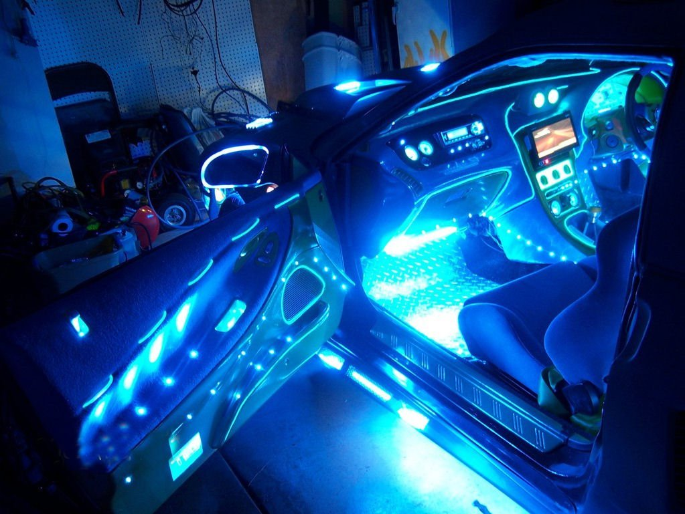
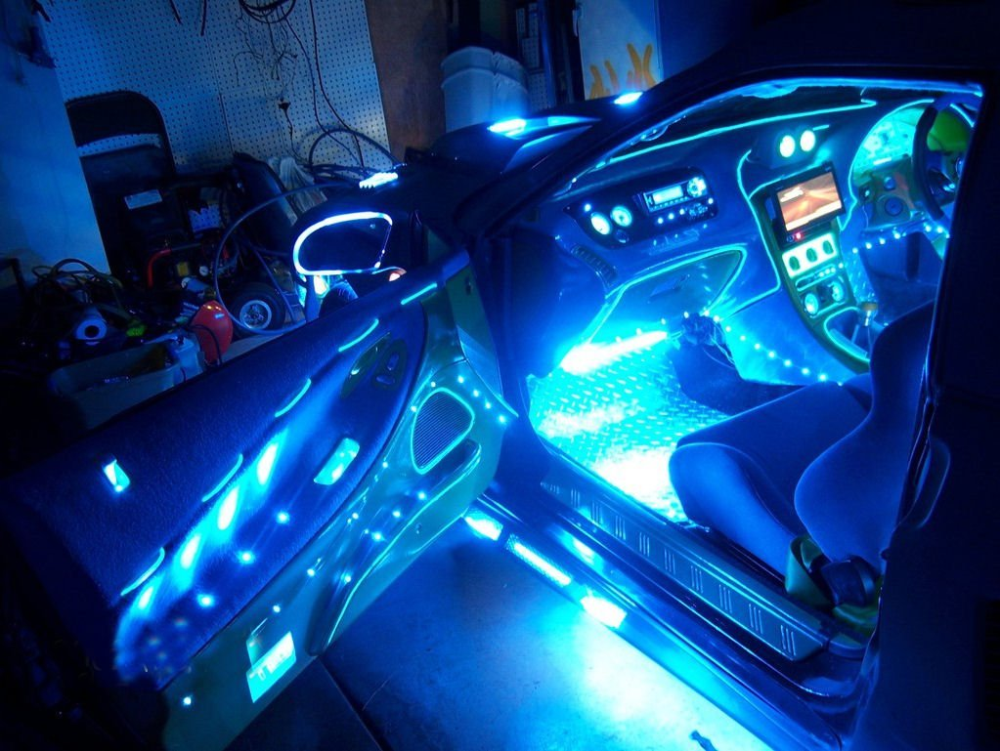

De lujo
Pulido
Pulir un auto es un proceso que consiste en sacar una pequeña capa de pintura al acabado del auto y luego se ve una capa más fresca de pintura debajo. Este proceso restaura el brillo original del auto y mejora su apariencia.
Cromado
El vinilo cromado queda espectacular y pese a que es un proceso que en manos expertas puede salir caro, seguro que es mucho más barato que pintar el vehículo y obtener este resultado.
Pintura acabado mate
Un acabado negro mate puede agregar una estética elegante a tu vehículo o un acabado mate simplemente puedes cubrir un trabajo desvanecido, de pintura antigua.
tubos de escape y más
Headers Mufflers Terminales Accesorios Interior y Exterior Timones Limpieza del carro Lubricantes Filtros de Aire Tacómetros Intake Tubos Flexibles
Inyeccion de Oxido nitroso
El sistema funciona inyectando oxido nitroso en la admisión del aire, , simplemente esa es la función básica de este potente combustible llamado nitro y que te dara ventajas enormes en cuanto a potencia y velocidad a tu motor.
 

Iluminacion (luces de neon)
La luz de neón se produce en unos tubos que contienen neón y otros gases enrarecidos y que, mediante la electricidad, dan una luminescencia brillante dando colores vivos al auto.